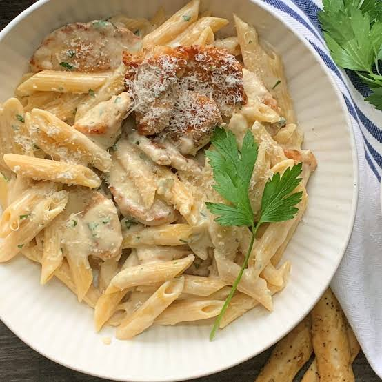

Chicken Alfredo Pasta

Ingredients :
| Ingredient |
Amount |
| Chicken Breasts |
2 |
| Olive Oil |
2 tbsp |
| Salt and Pepper |
To taste |
| Garlic (minced) |
3 cloves |
| Heavy Cream |
1 cup |
| Milk |
1 cup |
| Grated Parmesan Cheese |
1 cup |
| Italian Seasoning |
1 tsp |
| Garlic Powder |
1/2 tsp |
| Fettuccine Pasta |
1 lb |
| Fresh Parsley |
For garnish |
Recipe :
- Boil a large pot of salted water. Cook the fettuccine pasta according to the package instructions, then drain and set aside.
- Season the chicken breasts with salt and pepper. Heat olive oil in a pan over medium-high heat. Cook the chicken for about 6-7 minutes per side, or until fully cooked. Remove from the pan and set aside to rest. Once cooled, slice the chicken into strips.
- In the same pan, add minced garlic and cook for 1-2 minutes until fragrant. Add the heavy cream, milk, Parmesan cheese, Italian seasoning, and garlic powder. Stir well and let the sauce simmer on low heat for 4-5 minutes, until it thickens.
- Add the cooked pasta to the sauce and toss to coat the pasta evenly. Add the sliced chicken on top.
- Garnish with fresh parsley and extra Parmesan cheese, if desired. Serve hot and enjoy!
Back to the recipe list